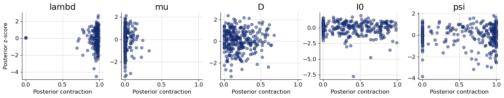
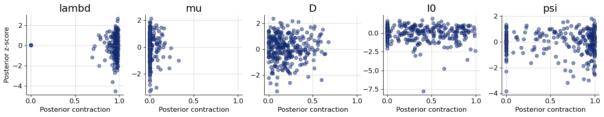

3. Posterior Estimation for SIR-like Models#
Author: Stefan T. Radev
import datetime
import matplotlib.pyplot as plt
import numpy as np
import pandas as pd
# ensure the backend is set
import os
if "KERAS_BACKEND" not in os.environ:
# set this to "torch", "tensorflow", or "jax"
os.environ["KERAS_BACKEND"] = "tensorflow"
import keras
# For BayesFlow devs: this ensures that the latest dev version can be found
import sys
sys.path.append('../')
import bayesflow as bf
3.1. Introduction #
In this tutorial, we will illustrate how to perform posterior inference on simple, stationary SIR-like models (complex models will be tackled in a further notebook). SIR-like models comprise suitable illustrative examples, since they generate time-series and their outputs represent the results of solving a system of ordinary differential equations (ODEs).
The details for tackling stochastic epidemiological models with neural networks are described in our corresponding paper, which you can consult for a more formal exposition and a more comprehensive treatment of neural architectures:
OutbreakFlow: Model-based Bayesian inference of disease outbreak dynamics with invertible neural networks and its application to the COVID-19 pandemics in Germany https://journals.plos.org/ploscompbiol/article?id=10.1371/journal.pcbi.1009472
3.2. Defining the Simulator #
RNG = np.random.default_rng(2024)
As described in our very first notebook, a generative model consists of a prior (encoding suitable parameter ranges) and a simulator (generating data given simulations). Our underlying model distinguishes between susceptible, \(S\), infected, \(I\), and recovered, \(R\), individuals with infection and recovery occurring at a constant transmission rate \(\lambda\) and constant recovery rate \(\mu\), respectively. The model dynamics are governed by the following system of ODEs:
with \(N = S + I + R\) denoting the total population size. For the purpose of forward inference (simulation), we will use a time step of \(dt = 1\), corresponding to daily case reports. In addition to the ODE parameters \(\lambda\) and \(\mu\), we consider a reporting delay parameter \(L\) and a dispersion parameter \(\psi\), which affect the number of reported infected individuals via a negative binomial disttribution (https://en.wikipedia.org/wiki/Negative_binomial_distribution):
In this way, we connect the latent disease model to an observation model, which renders the relationship between parameters and data a stochastic one. Note, that the observation model induces a further parameter \(\psi\), responsible for the dispersion of the noise. Finally, we will also treat the number of initially infected individuals, \(I_0\) as an unknown parameter (having its own prior distribution).
3.2.1. Prior #
We will place the following prior distributions over the five model parameters, summarized in the table below:
How did we come up with these priors? In this case, we rely on the domain expertise and previous research (https://www.science.org/doi/10.1126/science.abb9789). In addition, the new parameter \(\psi\) follows an exponential distribution, which restricts it to positive numbers. Below is the implementation of these priors:
def prior():
"""Generates a random draw from the joint prior."""
lambd = RNG.lognormal(mean=np.log(0.4), sigma=0.5)
mu = RNG.lognormal(mean=np.log(1 / 8), sigma=0.2)
D = RNG.lognormal(mean=np.log(8), sigma=0.2)
I0 = RNG.gamma(shape=2, scale=20)
psi = RNG.exponential(5)
return {"lambd": lambd, "mu": mu, "D": D, "I0": I0, "psi": psi}
3.2.2. Observation Model (Implicit Likelihood Function) #
from scipy.stats import nbinom
def convert_params(mu, phi):
"""Helper function to convert mean/dispersion parameterization of a negative binomial to N and p,
as expected by numpy's negative_binomial.
See https://en.wikipedia.org/wiki/Negative_binomial_distribution#Alternative_formulations
"""
r = phi
var = mu + 1 / r * mu**2
p = (var - mu) / var
return r, 1 - p
def stationary_SIR(lambd, mu, D, I0, psi, N=83e6, T=14, eps=1e-5):
"""Performs a forward simulation from the stationary SIR model given a random draw from the prior."""
# Extract parameters and round I0 and D
I0 = np.ceil(I0)
D = int(round(D))
# Initial conditions
S, I, R = [N - I0], [I0], [0]
# Reported new cases
C = [I0]
# Simulate T-1 timesteps
for t in range(1, T + D):
# Calculate new cases
I_new = lambd * (I[-1] * S[-1] / N)
# SIR equations
S_t = S[-1] - I_new
I_t = np.clip(I[-1] + I_new - mu * I[-1], 0.0, N)
R_t = np.clip(R[-1] + mu * I[-1], 0.0, N)
# Track
S.append(S_t)
I.append(I_t)
R.append(R_t)
C.append(I_new)
reparam = convert_params(np.clip(np.array(C[D:]), 0, N) + eps, psi)
C_obs = RNG.negative_binomial(reparam[0], reparam[1])
return dict(cases=C_obs)
As you can see, in addition to the parameters, our simulator requires two further arguments: the total population size \(N\) and the time horizon \(T\). These are quantities over which we can amortize (i.e., context variables), but for this example, we will just use the population of Germany and the first two weeks of the pandemics (i.e., \(T=14\)), in the same vein as https://www.science.org/doi/10.1126/science.abb9789.
3.2.3. Loading Real Data #
We will define a simple helper function to load the actually reported cases in 2020 for the first two weeks of the Covid-19 pandemic in Germany.
def load_data():
"""Helper function to load cumulative cases and transform them to new cases."""
confirmed_cases_url = "https://raw.githubusercontent.com/CSSEGISandData/COVID-19/master/csse_covid_19_data/csse_covid_19_time_series/time_series_covid19_confirmed_global.csv"
confirmed_cases = pd.read_csv(confirmed_cases_url, sep=",")
date_data_begin = datetime.date(2020, 3, 1)
date_data_end = datetime.date(2020, 3, 15)
format_date = lambda date_py: f"{date_py.month}/{date_py.day}/{str(date_py.year)[2:4]}"
date_formatted_begin = format_date(date_data_begin)
date_formatted_end = format_date(date_data_end)
cases_obs = np.array(
confirmed_cases.loc[confirmed_cases["Country/Region"] == "Germany", date_formatted_begin:date_formatted_end]
)[0]
new_cases_obs = np.diff(cases_obs)
return new_cases_obs
3.2.4. Stitiching Things Together #
We can combine the prior \(p(\theta)\) and the observation model \(p(x_{1:T}\mid\theta)\) into a joint model \(p(\theta, x_{1:T}) = p(\theta) \; p(x_{1:T}\mid\theta)\) using the make_simulator builder.
The resulting object can now generate batches of simulations.
simulator = bf.make_simulator([prior, stationary_SIR])
%%time
test_sims = simulator.sample(batch_size=2)
print(test_sims["lambd"].shape)
print(test_sims["D"].shape)
print(test_sims["cases"].shape)
(2, 1)
(2, 1)
(2, 14)
CPU times: user 1.01 ms, sys: 182 μs, total: 1.19 ms
Wall time: 1.13 ms
3.3. Prior Checking #
Any principled Bayesian workflow requires some prior predictive or prior pushforward checks to ensure that the prior specification is consistent with domain expertise (see https://betanalpha.github.io/assets/case_studies/principled_bayesian_workflow.html). The BayesFlow library provides some rudimentary visual tools for performing prior checking. For instance, we can visually inspect the joint prior in the form of bivariate plots. We can focus on particular parameter combinations, such as \(\lambda\), \(\mu\), and \(D\):
prior_samples = simulator.simulators[0].sample(1000)
grid = bf.diagnostics.plots.pairs_samples(
prior_samples, variable_keys=["lambd", "mu", "D"]
)
3.4. Defining the Adapter#
We need to ensure that the outputs of the forward model are suitable for processing with neural networks. Currently, they are not, since our data \(x_{1:T}\) consists of large integer (count) values. However, neural networks like scaled data. Furthermore, our parameters \(\theta\) exhibit widely different scales due to their prior specification and role in the simulator. Finally, BayesFlow needs to know which variables are to be inferred and which ones are to be processed by the summary network before being passed to the inference network. We handle all of these steps using an Adapter.
Since all of our parameters and observables can only take on positive values, we will apply a log plus one transform to all quantities. Note, that BayesFlow expects the following keys to be present in the final outputs of your configured simulations:
inference_variables: These are the variables we are inferring.summary_variables: These are the variables that are compressed throgh a summary network and used for inferring the inference variables.
Thus, what our approximators are learning is \(p(\text{inference variables} \mid t(\text{summary variables}))\), where \(t\) is the summary network.
adapter = (
bf.adapters.Adapter()
.convert_dtype("float64", "float32")
.as_time_series("cases")
.concatenate(["lambd", "mu", "D", "I0", "psi"], into="inference_variables")
.rename("cases", "summary_variables")
# since all our variables are non-negative (zero or larger)
# this .apply call ensures that the variables are transformed
# to the unconstrained real space and can be back-transformed under the hood
.apply(forward=lambda x: np.log1p(x), inverse=lambda x: np.expm1(x))
)
# Let's check out the new shapes
adapted_sims = adapter(simulator.sample(2))
print(adapted_sims["summary_variables"].shape)
print(adapted_sims["inference_variables"].shape)
(2, 14, 1)
(2, 5)
3.5. Defining the Neural Approximator #
We can now proceed to define our BayesFlow neural architecture, that is, combine a summary network with an inference network.
3.5.1. Summary Network #
Since our simulator outputs 3D tensors of shape (batch_size, T = 14, 1), we need to reduce this three-dimensional tensor into a two-dimensional tensor of shape (batch_size, summary_dim). Our model outputs are actually so simple that we could have just removed the trailing dimension of the raw outputs and simply fed the data directly to the inference network.
However, we demonstrate the use of a simple Gated Recurrent Unit (GRU) summary network. Any keras model can interact with BayesFlow by inherting from SummaryNetwork which accepts an addition stage argument indicating the mode the network is currently operating in (i.e., training vs. inference).
class GRU(bf.networks.SummaryNetwork):
def __init__(self, **kwargs):
super().__init__(**kwargs)
self.gru = keras.layers.GRU(64, dropout=0.1)
self.summary_stats = keras.layers.Dense(8)
def call(self, time_series, **kwargs):
"""Compresses time_series of shape (batch_size, T, 1) into summaries of shape (batch_size, 8)."""
summary = self.gru(time_series, training=kwargs.get("stage") == "training")
summary = self.summary_stats(summary)
return summary
summary_net = GRU()
3.5.2. Inference Network#
As inference network we choose a flow matching architecture with some dropout to robustify the inference. Dropout is primarily important when learning from a (small) offline dataset. See below for details.
inference_net = bf.networks.CouplingFlow(
subnet_kwargs={"residual": True, "dropout": 0.1, "widths": (128, 128, 128)}
)
workflow = bf.BasicWorkflow(
simulator=simulator,
adapter=adapter,
inference_network=inference_net,
summary_network=summary_net,
inference_variables=["lambd", "mu", "D", "I0", "psi"]
)
3.6. Training #
Ready to train! Since our simulator is pretty fast, we can safely go with online training. Let’s glean the time taken for a batch of \(32\) simulations.
%%time
_ = workflow.simulate(32)
CPU times: user 4.82 ms, sys: 733 μs, total: 5.55 ms
Wall time: 5.06 ms
Not too bad! However, for the purpose of illustration, we will go with offline training using a fixed data set of simulations.
3.6.1. Generating Offline Data #
training_data = workflow.simulate(5000)
validation_data = workflow.simulate(300)
We are now ready to train. If not provided, the default settings use \(100\) epochs with a batch size of \(32\).
history = workflow.fit_offline(training_data, epochs=300, batch_size=64, validation_data=validation_data)
Epoch 1/300
79/79 ━━━━━━━━━━━━━━━━━━━━ 5s 38ms/step - loss: 2.5759 - loss/inference_loss: 2.5759 - val_loss: -1.5397 - val_loss/inference_loss: -1.5397
Epoch 2/300
79/79 ━━━━━━━━━━━━━━━━━━━━ 0s 6ms/step - loss: -1.8226 - loss/inference_loss: -1.8226 - val_loss: -2.0951 - val_loss/inference_loss: -2.0951
Epoch 3/300
79/79 ━━━━━━━━━━━━━━━━━━━━ 1s 7ms/step - loss: -2.4630 - loss/inference_loss: -2.4630 - val_loss: -2.9181 - val_loss/inference_loss: -2.9181
Epoch 4/300
79/79 ━━━━━━━━━━━━━━━━━━━━ 0s 6ms/step - loss: -2.4353 - loss/inference_loss: -2.4353 - val_loss: -2.1468 - val_loss/inference_loss: -2.1468
Epoch 5/300
79/79 ━━━━━━━━━━━━━━━━━━━━ 0s 6ms/step - loss: -2.8392 - loss/inference_loss: -2.8392 - val_loss: -2.4448 - val_loss/inference_loss: -2.4448
Epoch 6/300
79/79 ━━━━━━━━━━━━━━━━━━━━ 1s 6ms/step - loss: -2.7054 - loss/inference_loss: -2.7054 - val_loss: -2.9647 - val_loss/inference_loss: -2.9647
Epoch 7/300
79/79 ━━━━━━━━━━━━━━━━━━━━ 1s 6ms/step - loss: -2.7452 - loss/inference_loss: -2.7452 - val_loss: -2.9191 - val_loss/inference_loss: -2.9191
Epoch 8/300
79/79 ━━━━━━━━━━━━━━━━━━━━ 1s 6ms/step - loss: -2.7901 - loss/inference_loss: -2.7901 - val_loss: -2.3278 - val_loss/inference_loss: -2.3278
Epoch 9/300
79/79 ━━━━━━━━━━━━━━━━━━━━ 1s 7ms/step - loss: -2.8969 - loss/inference_loss: -2.8969 - val_loss: -3.1457 - val_loss/inference_loss: -3.1457
Epoch 10/300
79/79 ━━━━━━━━━━━━━━━━━━━━ 0s 6ms/step - loss: -2.9737 - loss/inference_loss: -2.9737 - val_loss: -2.6719 - val_loss/inference_loss: -2.6719
Epoch 11/300
79/79 ━━━━━━━━━━━━━━━━━━━━ 0s 6ms/step - loss: -2.8779 - loss/inference_loss: -2.8779 - val_loss: -3.2797 - val_loss/inference_loss: -3.2797
Epoch 12/300
79/79 ━━━━━━━━━━━━━━━━━━━━ 0s 6ms/step - loss: -2.9281 - loss/inference_loss: -2.9281 - val_loss: -3.1939 - val_loss/inference_loss: -3.1939
Epoch 13/300
79/79 ━━━━━━━━━━━━━━━━━━━━ 0s 6ms/step - loss: -2.9576 - loss/inference_loss: -2.9576 - val_loss: -2.1279 - val_loss/inference_loss: -2.1279
Epoch 14/300
79/79 ━━━━━━━━━━━━━━━━━━━━ 0s 6ms/step - loss: -3.0696 - loss/inference_loss: -3.0696 - val_loss: -3.3281 - val_loss/inference_loss: -3.3281
Epoch 15/300
79/79 ━━━━━━━━━━━━━━━━━━━━ 0s 6ms/step - loss: -2.9692 - loss/inference_loss: -2.9692 - val_loss: -3.3059 - val_loss/inference_loss: -3.3059
Epoch 16/300
79/79 ━━━━━━━━━━━━━━━━━━━━ 1s 7ms/step - loss: -2.8937 - loss/inference_loss: -2.8937 - val_loss: -3.3683 - val_loss/inference_loss: -3.3683
Epoch 17/300
79/79 ━━━━━━━━━━━━━━━━━━━━ 0s 6ms/step - loss: -3.0199 - loss/inference_loss: -3.0199 - val_loss: -3.0553 - val_loss/inference_loss: -3.0553
Epoch 18/300
79/79 ━━━━━━━━━━━━━━━━━━━━ 1s 6ms/step - loss: -3.0720 - loss/inference_loss: -3.0720 - val_loss: -2.4741 - val_loss/inference_loss: -2.4741
Epoch 19/300
79/79 ━━━━━━━━━━━━━━━━━━━━ 0s 6ms/step - loss: -2.8367 - loss/inference_loss: -2.8367 - val_loss: -3.4404 - val_loss/inference_loss: -3.4404
Epoch 20/300
79/79 ━━━━━━━━━━━━━━━━━━━━ 0s 6ms/step - loss: -3.0862 - loss/inference_loss: -3.0862 - val_loss: -3.2909 - val_loss/inference_loss: -3.2909
Epoch 21/300
79/79 ━━━━━━━━━━━━━━━━━━━━ 0s 6ms/step - loss: -3.2712 - loss/inference_loss: -3.2712 - val_loss: -3.3955 - val_loss/inference_loss: -3.3955
Epoch 22/300
79/79 ━━━━━━━━━━━━━━━━━━━━ 0s 6ms/step - loss: -3.1948 - loss/inference_loss: -3.1948 - val_loss: -2.5209 - val_loss/inference_loss: -2.5209
Epoch 23/300
79/79 ━━━━━━━━━━━━━━━━━━━━ 0s 6ms/step - loss: -3.2677 - loss/inference_loss: -3.2677 - val_loss: -3.0838 - val_loss/inference_loss: -3.0838
Epoch 24/300
79/79 ━━━━━━━━━━━━━━━━━━━━ 0s 6ms/step - loss: -3.4376 - loss/inference_loss: -3.4376 - val_loss: -3.6139 - val_loss/inference_loss: -3.6139
Epoch 25/300
79/79 ━━━━━━━━━━━━━━━━━━━━ 0s 6ms/step - loss: -3.3568 - loss/inference_loss: -3.3568 - val_loss: -2.9090 - val_loss/inference_loss: -2.9090
Epoch 26/300
79/79 ━━━━━━━━━━━━━━━━━━━━ 0s 6ms/step - loss: -3.3278 - loss/inference_loss: -3.3278 - val_loss: -3.2694 - val_loss/inference_loss: -3.2694
Epoch 27/300
79/79 ━━━━━━━━━━━━━━━━━━━━ 0s 6ms/step - loss: -3.4394 - loss/inference_loss: -3.4394 - val_loss: -3.9272 - val_loss/inference_loss: -3.9272
Epoch 28/300
79/79 ━━━━━━━━━━━━━━━━━━━━ 0s 6ms/step - loss: -3.5104 - loss/inference_loss: -3.5104 - val_loss: -3.4261 - val_loss/inference_loss: -3.4261
Epoch 29/300
79/79 ━━━━━━━━━━━━━━━━━━━━ 0s 6ms/step - loss: -3.5621 - loss/inference_loss: -3.5621 - val_loss: -3.8807 - val_loss/inference_loss: -3.8807
Epoch 30/300
79/79 ━━━━━━━━━━━━━━━━━━━━ 0s 6ms/step - loss: -3.5536 - loss/inference_loss: -3.5536 - val_loss: -4.0935 - val_loss/inference_loss: -4.0935
Epoch 31/300
79/79 ━━━━━━━━━━━━━━━━━━━━ 0s 6ms/step - loss: -3.6206 - loss/inference_loss: -3.6206 - val_loss: -3.2150 - val_loss/inference_loss: -3.2150
Epoch 32/300
79/79 ━━━━━━━━━━━━━━━━━━━━ 0s 6ms/step - loss: -3.7108 - loss/inference_loss: -3.7108 - val_loss: -3.3350 - val_loss/inference_loss: -3.3350
Epoch 33/300
79/79 ━━━━━━━━━━━━━━━━━━━━ 1s 6ms/step - loss: -3.7629 - loss/inference_loss: -3.7629 - val_loss: -3.7399 - val_loss/inference_loss: -3.7399
Epoch 34/300
79/79 ━━━━━━━━━━━━━━━━━━━━ 0s 6ms/step - loss: -3.8004 - loss/inference_loss: -3.8004 - val_loss: -4.0267 - val_loss/inference_loss: -4.0267
Epoch 35/300
79/79 ━━━━━━━━━━━━━━━━━━━━ 0s 6ms/step - loss: -3.7546 - loss/inference_loss: -3.7546 - val_loss: -3.5888 - val_loss/inference_loss: -3.5888
Epoch 36/300
79/79 ━━━━━━━━━━━━━━━━━━━━ 1s 6ms/step - loss: -3.8229 - loss/inference_loss: -3.8229 - val_loss: -3.8725 - val_loss/inference_loss: -3.8725
Epoch 37/300
79/79 ━━━━━━━━━━━━━━━━━━━━ 0s 6ms/step - loss: -3.6206 - loss/inference_loss: -3.6206 - val_loss: -4.1656 - val_loss/inference_loss: -4.1656
Epoch 38/300
79/79 ━━━━━━━━━━━━━━━━━━━━ 0s 6ms/step - loss: -3.9574 - loss/inference_loss: -3.9574 - val_loss: -3.5146 - val_loss/inference_loss: -3.5146
Epoch 39/300
79/79 ━━━━━━━━━━━━━━━━━━━━ 1s 6ms/step - loss: -3.6467 - loss/inference_loss: -3.6467 - val_loss: -4.1144 - val_loss/inference_loss: -4.1144
Epoch 40/300
79/79 ━━━━━━━━━━━━━━━━━━━━ 0s 6ms/step - loss: -3.8612 - loss/inference_loss: -3.8612 - val_loss: -3.7952 - val_loss/inference_loss: -3.7952
Epoch 41/300
79/79 ━━━━━━━━━━━━━━━━━━━━ 1s 6ms/step - loss: -3.8482 - loss/inference_loss: -3.8482 - val_loss: -3.6063 - val_loss/inference_loss: -3.6063
Epoch 42/300
79/79 ━━━━━━━━━━━━━━━━━━━━ 0s 6ms/step - loss: -3.9601 - loss/inference_loss: -3.9601 - val_loss: -4.2152 - val_loss/inference_loss: -4.2152
Epoch 43/300
79/79 ━━━━━━━━━━━━━━━━━━━━ 0s 6ms/step - loss: -3.8636 - loss/inference_loss: -3.8636 - val_loss: -3.4729 - val_loss/inference_loss: -3.4729
Epoch 44/300
79/79 ━━━━━━━━━━━━━━━━━━━━ 0s 6ms/step - loss: -3.9076 - loss/inference_loss: -3.9076 - val_loss: -2.6703 - val_loss/inference_loss: -2.6703
Epoch 45/300
79/79 ━━━━━━━━━━━━━━━━━━━━ 0s 6ms/step - loss: -3.9190 - loss/inference_loss: -3.9190 - val_loss: -3.6787 - val_loss/inference_loss: -3.6787
Epoch 46/300
79/79 ━━━━━━━━━━━━━━━━━━━━ 0s 6ms/step - loss: -3.9781 - loss/inference_loss: -3.9781 - val_loss: -3.8450 - val_loss/inference_loss: -3.8450
Epoch 47/300
79/79 ━━━━━━━━━━━━━━━━━━━━ 0s 6ms/step - loss: -3.9696 - loss/inference_loss: -3.9696 - val_loss: -3.0915 - val_loss/inference_loss: -3.0915
Epoch 48/300
79/79 ━━━━━━━━━━━━━━━━━━━━ 0s 6ms/step - loss: -4.0038 - loss/inference_loss: -4.0038 - val_loss: -3.5089 - val_loss/inference_loss: -3.5089
Epoch 49/300
79/79 ━━━━━━━━━━━━━━━━━━━━ 0s 6ms/step - loss: -3.8984 - loss/inference_loss: -3.8984 - val_loss: -4.2436 - val_loss/inference_loss: -4.2436
Epoch 50/300
79/79 ━━━━━━━━━━━━━━━━━━━━ 0s 6ms/step - loss: -4.0717 - loss/inference_loss: -4.0717 - val_loss: -3.8192 - val_loss/inference_loss: -3.8192
Epoch 51/300
79/79 ━━━━━━━━━━━━━━━━━━━━ 0s 6ms/step - loss: -4.2213 - loss/inference_loss: -4.2213 - val_loss: -4.3196 - val_loss/inference_loss: -4.3196
Epoch 52/300
79/79 ━━━━━━━━━━━━━━━━━━━━ 0s 6ms/step - loss: -4.0240 - loss/inference_loss: -4.0240 - val_loss: -3.5607 - val_loss/inference_loss: -3.5607
Epoch 53/300
79/79 ━━━━━━━━━━━━━━━━━━━━ 0s 6ms/step - loss: -4.1124 - loss/inference_loss: -4.1124 - val_loss: -4.0867 - val_loss/inference_loss: -4.0867
Epoch 54/300
79/79 ━━━━━━━━━━━━━━━━━━━━ 0s 6ms/step - loss: -3.9183 - loss/inference_loss: -3.9183 - val_loss: -3.5536 - val_loss/inference_loss: -3.5536
Epoch 55/300
79/79 ━━━━━━━━━━━━━━━━━━━━ 0s 6ms/step - loss: -4.1445 - loss/inference_loss: -4.1445 - val_loss: -3.8083 - val_loss/inference_loss: -3.8083
Epoch 56/300
79/79 ━━━━━━━━━━━━━━━━━━━━ 0s 6ms/step - loss: -4.2292 - loss/inference_loss: -4.2292 - val_loss: -4.0900 - val_loss/inference_loss: -4.0900
Epoch 57/300
79/79 ━━━━━━━━━━━━━━━━━━━━ 0s 6ms/step - loss: -4.2470 - loss/inference_loss: -4.2470 - val_loss: -4.2393 - val_loss/inference_loss: -4.2393
Epoch 58/300
79/79 ━━━━━━━━━━━━━━━━━━━━ 0s 6ms/step - loss: -4.2115 - loss/inference_loss: -4.2115 - val_loss: -4.5119 - val_loss/inference_loss: -4.5119
Epoch 59/300
79/79 ━━━━━━━━━━━━━━━━━━━━ 0s 6ms/step - loss: -4.2984 - loss/inference_loss: -4.2984 - val_loss: -4.2654 - val_loss/inference_loss: -4.2654
Epoch 60/300
79/79 ━━━━━━━━━━━━━━━━━━━━ 0s 6ms/step - loss: -4.3837 - loss/inference_loss: -4.3837 - val_loss: -3.5729 - val_loss/inference_loss: -3.5729
Epoch 61/300
79/79 ━━━━━━━━━━━━━━━━━━━━ 0s 6ms/step - loss: -4.4160 - loss/inference_loss: -4.4160 - val_loss: -4.6158 - val_loss/inference_loss: -4.6158
Epoch 62/300
79/79 ━━━━━━━━━━━━━━━━━━━━ 0s 6ms/step - loss: -4.4260 - loss/inference_loss: -4.4260 - val_loss: -4.6498 - val_loss/inference_loss: -4.6498
Epoch 63/300
79/79 ━━━━━━━━━━━━━━━━━━━━ 0s 6ms/step - loss: -4.5024 - loss/inference_loss: -4.5024 - val_loss: -4.4340 - val_loss/inference_loss: -4.4340
Epoch 64/300
79/79 ━━━━━━━━━━━━━━━━━━━━ 0s 6ms/step - loss: -4.5113 - loss/inference_loss: -4.5113 - val_loss: -4.4258 - val_loss/inference_loss: -4.4258
Epoch 65/300
79/79 ━━━━━━━━━━━━━━━━━━━━ 0s 6ms/step - loss: -4.3942 - loss/inference_loss: -4.3942 - val_loss: -4.1430 - val_loss/inference_loss: -4.1430
Epoch 66/300
79/79 ━━━━━━━━━━━━━━━━━━━━ 0s 6ms/step - loss: -4.4874 - loss/inference_loss: -4.4874 - val_loss: -4.1138 - val_loss/inference_loss: -4.1138
Epoch 67/300
79/79 ━━━━━━━━━━━━━━━━━━━━ 0s 6ms/step - loss: -4.5030 - loss/inference_loss: -4.5030 - val_loss: -4.5718 - val_loss/inference_loss: -4.5718
Epoch 68/300
79/79 ━━━━━━━━━━━━━━━━━━━━ 0s 6ms/step - loss: -4.4269 - loss/inference_loss: -4.4269 - val_loss: -3.9706 - val_loss/inference_loss: -3.9706
Epoch 69/300
79/79 ━━━━━━━━━━━━━━━━━━━━ 0s 6ms/step - loss: -4.3311 - loss/inference_loss: -4.3311 - val_loss: -4.6668 - val_loss/inference_loss: -4.6668
Epoch 70/300
79/79 ━━━━━━━━━━━━━━━━━━━━ 0s 6ms/step - loss: -4.5304 - loss/inference_loss: -4.5304 - val_loss: -4.4964 - val_loss/inference_loss: -4.4964
Epoch 71/300
79/79 ━━━━━━━━━━━━━━━━━━━━ 0s 6ms/step - loss: -4.6015 - loss/inference_loss: -4.6015 - val_loss: -4.4840 - val_loss/inference_loss: -4.4840
Epoch 72/300
79/79 ━━━━━━━━━━━━━━━━━━━━ 0s 6ms/step - loss: -4.4524 - loss/inference_loss: -4.4524 - val_loss: -4.1247 - val_loss/inference_loss: -4.1247
Epoch 73/300
79/79 ━━━━━━━━━━━━━━━━━━━━ 0s 6ms/step - loss: -4.4926 - loss/inference_loss: -4.4926 - val_loss: -4.1591 - val_loss/inference_loss: -4.1591
Epoch 74/300
79/79 ━━━━━━━━━━━━━━━━━━━━ 0s 6ms/step - loss: -4.3867 - loss/inference_loss: -4.3867 - val_loss: -4.8677 - val_loss/inference_loss: -4.8677
Epoch 75/300
79/79 ━━━━━━━━━━━━━━━━━━━━ 0s 6ms/step - loss: -4.5482 - loss/inference_loss: -4.5482 - val_loss: -4.0794 - val_loss/inference_loss: -4.0794
Epoch 76/300
79/79 ━━━━━━━━━━━━━━━━━━━━ 0s 6ms/step - loss: -4.5016 - loss/inference_loss: -4.5016 - val_loss: -4.0062 - val_loss/inference_loss: -4.0062
Epoch 77/300
79/79 ━━━━━━━━━━━━━━━━━━━━ 0s 6ms/step - loss: -4.5690 - loss/inference_loss: -4.5690 - val_loss: -4.3880 - val_loss/inference_loss: -4.3880
Epoch 78/300
79/79 ━━━━━━━━━━━━━━━━━━━━ 0s 6ms/step - loss: -4.6479 - loss/inference_loss: -4.6479 - val_loss: -4.8755 - val_loss/inference_loss: -4.8755
Epoch 79/300
79/79 ━━━━━━━━━━━━━━━━━━━━ 0s 6ms/step - loss: -4.6034 - loss/inference_loss: -4.6034 - val_loss: -4.4100 - val_loss/inference_loss: -4.4100
Epoch 80/300
79/79 ━━━━━━━━━━━━━━━━━━━━ 0s 6ms/step - loss: -4.6603 - loss/inference_loss: -4.6603 - val_loss: -4.1391 - val_loss/inference_loss: -4.1391
Epoch 81/300
79/79 ━━━━━━━━━━━━━━━━━━━━ 0s 6ms/step - loss: -4.5726 - loss/inference_loss: -4.5726 - val_loss: -4.7057 - val_loss/inference_loss: -4.7057
Epoch 82/300
79/79 ━━━━━━━━━━━━━━━━━━━━ 0s 6ms/step - loss: -4.7409 - loss/inference_loss: -4.7409 - val_loss: -4.6320 - val_loss/inference_loss: -4.6320
Epoch 83/300
79/79 ━━━━━━━━━━━━━━━━━━━━ 0s 6ms/step - loss: -4.5362 - loss/inference_loss: -4.5362 - val_loss: -4.2294 - val_loss/inference_loss: -4.2294
Epoch 84/300
79/79 ━━━━━━━━━━━━━━━━━━━━ 0s 6ms/step - loss: -4.6675 - loss/inference_loss: -4.6675 - val_loss: -4.3661 - val_loss/inference_loss: -4.3661
Epoch 85/300
79/79 ━━━━━━━━━━━━━━━━━━━━ 0s 6ms/step - loss: -4.6606 - loss/inference_loss: -4.6606 - val_loss: -4.7008 - val_loss/inference_loss: -4.7008
Epoch 86/300
79/79 ━━━━━━━━━━━━━━━━━━━━ 0s 6ms/step - loss: -4.7181 - loss/inference_loss: -4.7181 - val_loss: -4.4110 - val_loss/inference_loss: -4.4110
Epoch 87/300
79/79 ━━━━━━━━━━━━━━━━━━━━ 0s 6ms/step - loss: -4.6335 - loss/inference_loss: -4.6335 - val_loss: -4.2426 - val_loss/inference_loss: -4.2426
Epoch 88/300
79/79 ━━━━━━━━━━━━━━━━━━━━ 0s 6ms/step - loss: -4.5772 - loss/inference_loss: -4.5772 - val_loss: -4.1760 - val_loss/inference_loss: -4.1760
Epoch 89/300
79/79 ━━━━━━━━━━━━━━━━━━━━ 0s 6ms/step - loss: -4.5882 - loss/inference_loss: -4.5882 - val_loss: -4.5908 - val_loss/inference_loss: -4.5908
Epoch 90/300
79/79 ━━━━━━━━━━━━━━━━━━━━ 0s 6ms/step - loss: -4.7031 - loss/inference_loss: -4.7031 - val_loss: -4.7127 - val_loss/inference_loss: -4.7127
Epoch 91/300
79/79 ━━━━━━━━━━━━━━━━━━━━ 0s 6ms/step - loss: -4.6948 - loss/inference_loss: -4.6948 - val_loss: -4.9292 - val_loss/inference_loss: -4.9292
Epoch 92/300
79/79 ━━━━━━━━━━━━━━━━━━━━ 0s 6ms/step - loss: -4.7277 - loss/inference_loss: -4.7277 - val_loss: -4.3392 - val_loss/inference_loss: -4.3392
Epoch 93/300
79/79 ━━━━━━━━━━━━━━━━━━━━ 0s 6ms/step - loss: -4.6701 - loss/inference_loss: -4.6701 - val_loss: -4.9827 - val_loss/inference_loss: -4.9827
Epoch 94/300
79/79 ━━━━━━━━━━━━━━━━━━━━ 0s 6ms/step - loss: -4.7204 - loss/inference_loss: -4.7204 - val_loss: -4.7546 - val_loss/inference_loss: -4.7546
Epoch 95/300
79/79 ━━━━━━━━━━━━━━━━━━━━ 0s 6ms/step - loss: -4.7103 - loss/inference_loss: -4.7103 - val_loss: -4.7964 - val_loss/inference_loss: -4.7964
Epoch 96/300
79/79 ━━━━━━━━━━━━━━━━━━━━ 0s 6ms/step - loss: -4.7233 - loss/inference_loss: -4.7233 - val_loss: -4.7185 - val_loss/inference_loss: -4.7185
Epoch 97/300
79/79 ━━━━━━━━━━━━━━━━━━━━ 0s 6ms/step - loss: -4.7438 - loss/inference_loss: -4.7438 - val_loss: -4.8384 - val_loss/inference_loss: -4.8384
Epoch 98/300
79/79 ━━━━━━━━━━━━━━━━━━━━ 0s 6ms/step - loss: -4.8466 - loss/inference_loss: -4.8466 - val_loss: -5.2245 - val_loss/inference_loss: -5.2245
Epoch 99/300
79/79 ━━━━━━━━━━━━━━━━━━━━ 0s 6ms/step - loss: -4.7852 - loss/inference_loss: -4.7852 - val_loss: -5.0661 - val_loss/inference_loss: -5.0661
Epoch 100/300
79/79 ━━━━━━━━━━━━━━━━━━━━ 0s 6ms/step - loss: -4.8479 - loss/inference_loss: -4.8479 - val_loss: -4.4572 - val_loss/inference_loss: -4.4572
Epoch 101/300
79/79 ━━━━━━━━━━━━━━━━━━━━ 0s 6ms/step - loss: -4.7231 - loss/inference_loss: -4.7231 - val_loss: -4.8050 - val_loss/inference_loss: -4.8050
Epoch 102/300
79/79 ━━━━━━━━━━━━━━━━━━━━ 0s 6ms/step - loss: -4.7751 - loss/inference_loss: -4.7751 - val_loss: -4.4844 - val_loss/inference_loss: -4.4844
Epoch 103/300
79/79 ━━━━━━━━━━━━━━━━━━━━ 0s 6ms/step - loss: -4.7523 - loss/inference_loss: -4.7523 - val_loss: -4.9006 - val_loss/inference_loss: -4.9006
Epoch 104/300
79/79 ━━━━━━━━━━━━━━━━━━━━ 0s 6ms/step - loss: -4.7033 - loss/inference_loss: -4.7033 - val_loss: -4.6990 - val_loss/inference_loss: -4.6990
Epoch 105/300
79/79 ━━━━━━━━━━━━━━━━━━━━ 0s 6ms/step - loss: -4.7926 - loss/inference_loss: -4.7926 - val_loss: -4.7092 - val_loss/inference_loss: -4.7092
Epoch 106/300
79/79 ━━━━━━━━━━━━━━━━━━━━ 0s 6ms/step - loss: -4.7627 - loss/inference_loss: -4.7627 - val_loss: -4.7843 - val_loss/inference_loss: -4.7843
Epoch 107/300
79/79 ━━━━━━━━━━━━━━━━━━━━ 0s 6ms/step - loss: -4.7980 - loss/inference_loss: -4.7980 - val_loss: -4.6400 - val_loss/inference_loss: -4.6400
Epoch 108/300
79/79 ━━━━━━━━━━━━━━━━━━━━ 0s 6ms/step - loss: -4.8174 - loss/inference_loss: -4.8174 - val_loss: -4.6199 - val_loss/inference_loss: -4.6199
Epoch 109/300
79/79 ━━━━━━━━━━━━━━━━━━━━ 0s 6ms/step - loss: -4.8923 - loss/inference_loss: -4.8923 - val_loss: -4.7405 - val_loss/inference_loss: -4.7405
Epoch 110/300
79/79 ━━━━━━━━━━━━━━━━━━━━ 0s 6ms/step - loss: -4.7881 - loss/inference_loss: -4.7881 - val_loss: -4.7952 - val_loss/inference_loss: -4.7952
Epoch 111/300
79/79 ━━━━━━━━━━━━━━━━━━━━ 0s 6ms/step - loss: -4.8111 - loss/inference_loss: -4.8111 - val_loss: -4.7270 - val_loss/inference_loss: -4.7270
Epoch 112/300
79/79 ━━━━━━━━━━━━━━━━━━━━ 0s 6ms/step - loss: -4.8073 - loss/inference_loss: -4.8073 - val_loss: -4.7758 - val_loss/inference_loss: -4.7758
Epoch 113/300
79/79 ━━━━━━━━━━━━━━━━━━━━ 0s 6ms/step - loss: -4.8272 - loss/inference_loss: -4.8272 - val_loss: -4.4083 - val_loss/inference_loss: -4.4083
Epoch 114/300
79/79 ━━━━━━━━━━━━━━━━━━━━ 0s 6ms/step - loss: -4.6858 - loss/inference_loss: -4.6858 - val_loss: -5.1794 - val_loss/inference_loss: -5.1794
Epoch 115/300
79/79 ━━━━━━━━━━━━━━━━━━━━ 0s 6ms/step - loss: -4.7966 - loss/inference_loss: -4.7966 - val_loss: -4.6483 - val_loss/inference_loss: -4.6483
Epoch 116/300
79/79 ━━━━━━━━━━━━━━━━━━━━ 0s 6ms/step - loss: -4.7098 - loss/inference_loss: -4.7098 - val_loss: -4.2666 - val_loss/inference_loss: -4.2666
Epoch 117/300
79/79 ━━━━━━━━━━━━━━━━━━━━ 0s 6ms/step - loss: -4.8022 - loss/inference_loss: -4.8022 - val_loss: -4.6585 - val_loss/inference_loss: -4.6585
Epoch 118/300
79/79 ━━━━━━━━━━━━━━━━━━━━ 0s 6ms/step - loss: -4.7420 - loss/inference_loss: -4.7420 - val_loss: -5.1754 - val_loss/inference_loss: -5.1754
Epoch 119/300
79/79 ━━━━━━━━━━━━━━━━━━━━ 0s 6ms/step - loss: -4.8117 - loss/inference_loss: -4.8117 - val_loss: -4.3136 - val_loss/inference_loss: -4.3136
Epoch 120/300
79/79 ━━━━━━━━━━━━━━━━━━━━ 0s 6ms/step - loss: -4.7576 - loss/inference_loss: -4.7576 - val_loss: -4.8899 - val_loss/inference_loss: -4.8899
Epoch 121/300
79/79 ━━━━━━━━━━━━━━━━━━━━ 0s 6ms/step - loss: -4.8446 - loss/inference_loss: -4.8446 - val_loss: -4.7951 - val_loss/inference_loss: -4.7951
Epoch 122/300
79/79 ━━━━━━━━━━━━━━━━━━━━ 0s 6ms/step - loss: -4.8060 - loss/inference_loss: -4.8060 - val_loss: -4.6095 - val_loss/inference_loss: -4.6095
Epoch 123/300
79/79 ━━━━━━━━━━━━━━━━━━━━ 0s 6ms/step - loss: -4.8055 - loss/inference_loss: -4.8055 - val_loss: -4.6514 - val_loss/inference_loss: -4.6514
Epoch 124/300
79/79 ━━━━━━━━━━━━━━━━━━━━ 0s 6ms/step - loss: -4.8456 - loss/inference_loss: -4.8456 - val_loss: -4.9848 - val_loss/inference_loss: -4.9848
Epoch 125/300
79/79 ━━━━━━━━━━━━━━━━━━━━ 0s 6ms/step - loss: -4.8467 - loss/inference_loss: -4.8467 - val_loss: -4.7969 - val_loss/inference_loss: -4.7969
Epoch 126/300
79/79 ━━━━━━━━━━━━━━━━━━━━ 0s 6ms/step - loss: -4.8731 - loss/inference_loss: -4.8731 - val_loss: -4.7916 - val_loss/inference_loss: -4.7916
Epoch 127/300
79/79 ━━━━━━━━━━━━━━━━━━━━ 0s 6ms/step - loss: -4.8011 - loss/inference_loss: -4.8011 - val_loss: -4.7630 - val_loss/inference_loss: -4.7630
Epoch 128/300
79/79 ━━━━━━━━━━━━━━━━━━━━ 0s 6ms/step - loss: -4.8441 - loss/inference_loss: -4.8441 - val_loss: -4.4663 - val_loss/inference_loss: -4.4663
Epoch 129/300
79/79 ━━━━━━━━━━━━━━━━━━━━ 0s 6ms/step - loss: -4.8726 - loss/inference_loss: -4.8726 - val_loss: -4.8503 - val_loss/inference_loss: -4.8503
Epoch 130/300
79/79 ━━━━━━━━━━━━━━━━━━━━ 0s 6ms/step - loss: -4.8168 - loss/inference_loss: -4.8168 - val_loss: -4.3244 - val_loss/inference_loss: -4.3244
Epoch 131/300
79/79 ━━━━━━━━━━━━━━━━━━━━ 0s 6ms/step - loss: -4.8885 - loss/inference_loss: -4.8885 - val_loss: -4.6628 - val_loss/inference_loss: -4.6628
Epoch 132/300
79/79 ━━━━━━━━━━━━━━━━━━━━ 0s 6ms/step - loss: -4.9099 - loss/inference_loss: -4.9099 - val_loss: -4.5226 - val_loss/inference_loss: -4.5226
Epoch 133/300
79/79 ━━━━━━━━━━━━━━━━━━━━ 0s 6ms/step - loss: -4.8987 - loss/inference_loss: -4.8987 - val_loss: -4.3938 - val_loss/inference_loss: -4.3938
Epoch 134/300
79/79 ━━━━━━━━━━━━━━━━━━━━ 0s 6ms/step - loss: -4.8768 - loss/inference_loss: -4.8768 - val_loss: -4.5117 - val_loss/inference_loss: -4.5117
Epoch 135/300
79/79 ━━━━━━━━━━━━━━━━━━━━ 0s 6ms/step - loss: -4.8756 - loss/inference_loss: -4.8756 - val_loss: -4.0552 - val_loss/inference_loss: -4.0552
Epoch 136/300
79/79 ━━━━━━━━━━━━━━━━━━━━ 0s 6ms/step - loss: -4.9152 - loss/inference_loss: -4.9152 - val_loss: -4.7676 - val_loss/inference_loss: -4.7676
Epoch 137/300
79/79 ━━━━━━━━━━━━━━━━━━━━ 0s 6ms/step - loss: -4.9292 - loss/inference_loss: -4.9292 - val_loss: -4.9010 - val_loss/inference_loss: -4.9010
Epoch 138/300
79/79 ━━━━━━━━━━━━━━━━━━━━ 0s 6ms/step - loss: -4.9391 - loss/inference_loss: -4.9391 - val_loss: -4.4246 - val_loss/inference_loss: -4.4246
Epoch 139/300
79/79 ━━━━━━━━━━━━━━━━━━━━ 0s 6ms/step - loss: -4.9360 - loss/inference_loss: -4.9360 - val_loss: -4.9845 - val_loss/inference_loss: -4.9845
Epoch 140/300
79/79 ━━━━━━━━━━━━━━━━━━━━ 0s 6ms/step - loss: -4.9609 - loss/inference_loss: -4.9609 - val_loss: -4.7373 - val_loss/inference_loss: -4.7373
Epoch 141/300
79/79 ━━━━━━━━━━━━━━━━━━━━ 0s 6ms/step - loss: -4.9594 - loss/inference_loss: -4.9594 - val_loss: -4.4457 - val_loss/inference_loss: -4.4457
Epoch 142/300
79/79 ━━━━━━━━━━━━━━━━━━━━ 0s 6ms/step - loss: -4.8992 - loss/inference_loss: -4.8992 - val_loss: -4.3389 - val_loss/inference_loss: -4.3389
Epoch 143/300
79/79 ━━━━━━━━━━━━━━━━━━━━ 0s 6ms/step - loss: -4.9599 - loss/inference_loss: -4.9599 - val_loss: -4.9655 - val_loss/inference_loss: -4.9655
Epoch 144/300
79/79 ━━━━━━━━━━━━━━━━━━━━ 0s 6ms/step - loss: -4.9364 - loss/inference_loss: -4.9364 - val_loss: -5.0779 - val_loss/inference_loss: -5.0779
Epoch 145/300
79/79 ━━━━━━━━━━━━━━━━━━━━ 0s 6ms/step - loss: -4.9665 - loss/inference_loss: -4.9665 - val_loss: -4.7489 - val_loss/inference_loss: -4.7489
Epoch 146/300
79/79 ━━━━━━━━━━━━━━━━━━━━ 0s 6ms/step - loss: -4.9137 - loss/inference_loss: -4.9137 - val_loss: -4.6059 - val_loss/inference_loss: -4.6059
Epoch 147/300
79/79 ━━━━━━━━━━━━━━━━━━━━ 0s 6ms/step - loss: -4.9384 - loss/inference_loss: -4.9384 - val_loss: -4.7446 - val_loss/inference_loss: -4.7446
Epoch 148/300
79/79 ━━━━━━━━━━━━━━━━━━━━ 0s 6ms/step - loss: -4.9788 - loss/inference_loss: -4.9788 - val_loss: -4.7581 - val_loss/inference_loss: -4.7581
Epoch 149/300
79/79 ━━━━━━━━━━━━━━━━━━━━ 0s 6ms/step - loss: -4.9440 - loss/inference_loss: -4.9440 - val_loss: -4.7092 - val_loss/inference_loss: -4.7092
Epoch 150/300
79/79 ━━━━━━━━━━━━━━━━━━━━ 0s 6ms/step - loss: -4.9026 - loss/inference_loss: -4.9026 - val_loss: -4.8947 - val_loss/inference_loss: -4.8947
Epoch 151/300
79/79 ━━━━━━━━━━━━━━━━━━━━ 0s 6ms/step - loss: -4.9095 - loss/inference_loss: -4.9095 - val_loss: -4.8753 - val_loss/inference_loss: -4.8753
Epoch 152/300
79/79 ━━━━━━━━━━━━━━━━━━━━ 0s 6ms/step - loss: -4.9849 - loss/inference_loss: -4.9849 - val_loss: -4.9397 - val_loss/inference_loss: -4.9397
Epoch 153/300
79/79 ━━━━━━━━━━━━━━━━━━━━ 0s 6ms/step - loss: -4.9486 - loss/inference_loss: -4.9486 - val_loss: -4.5034 - val_loss/inference_loss: -4.5034
Epoch 154/300
79/79 ━━━━━━━━━━━━━━━━━━━━ 0s 6ms/step - loss: -5.0167 - loss/inference_loss: -5.0167 - val_loss: -5.0282 - val_loss/inference_loss: -5.0282
Epoch 155/300
79/79 ━━━━━━━━━━━━━━━━━━━━ 0s 6ms/step - loss: -5.0143 - loss/inference_loss: -5.0143 - val_loss: -4.7885 - val_loss/inference_loss: -4.7885
Epoch 156/300
79/79 ━━━━━━━━━━━━━━━━━━━━ 0s 6ms/step - loss: -5.0044 - loss/inference_loss: -5.0044 - val_loss: -4.6482 - val_loss/inference_loss: -4.6482
Epoch 157/300
79/79 ━━━━━━━━━━━━━━━━━━━━ 0s 6ms/step - loss: -5.0092 - loss/inference_loss: -5.0092 - val_loss: -4.5912 - val_loss/inference_loss: -4.5912
Epoch 158/300
79/79 ━━━━━━━━━━━━━━━━━━━━ 0s 6ms/step - loss: -4.9626 - loss/inference_loss: -4.9626 - val_loss: -4.6790 - val_loss/inference_loss: -4.6790
Epoch 159/300
79/79 ━━━━━━━━━━━━━━━━━━━━ 0s 6ms/step - loss: -4.9329 - loss/inference_loss: -4.9329 - val_loss: -4.0731 - val_loss/inference_loss: -4.0731
Epoch 160/300
79/79 ━━━━━━━━━━━━━━━━━━━━ 0s 6ms/step - loss: -4.9800 - loss/inference_loss: -4.9800 - val_loss: -5.0796 - val_loss/inference_loss: -5.0796
Epoch 161/300
79/79 ━━━━━━━━━━━━━━━━━━━━ 0s 6ms/step - loss: -4.9898 - loss/inference_loss: -4.9898 - val_loss: -5.0705 - val_loss/inference_loss: -5.0705
Epoch 162/300
79/79 ━━━━━━━━━━━━━━━━━━━━ 0s 6ms/step - loss: -5.0186 - loss/inference_loss: -5.0186 - val_loss: -4.7744 - val_loss/inference_loss: -4.7744
Epoch 163/300
79/79 ━━━━━━━━━━━━━━━━━━━━ 0s 6ms/step - loss: -4.9956 - loss/inference_loss: -4.9956 - val_loss: -5.1583 - val_loss/inference_loss: -5.1583
Epoch 164/300
79/79 ━━━━━━━━━━━━━━━━━━━━ 0s 6ms/step - loss: -5.0345 - loss/inference_loss: -5.0345 - val_loss: -4.8315 - val_loss/inference_loss: -4.8315
Epoch 165/300
79/79 ━━━━━━━━━━━━━━━━━━━━ 0s 6ms/step - loss: -5.0031 - loss/inference_loss: -5.0031 - val_loss: -4.7934 - val_loss/inference_loss: -4.7934
Epoch 166/300
79/79 ━━━━━━━━━━━━━━━━━━━━ 0s 6ms/step - loss: -5.0411 - loss/inference_loss: -5.0411 - val_loss: -5.0811 - val_loss/inference_loss: -5.0811
Epoch 167/300
79/79 ━━━━━━━━━━━━━━━━━━━━ 0s 6ms/step - loss: -5.0383 - loss/inference_loss: -5.0383 - val_loss: -4.8525 - val_loss/inference_loss: -4.8525
Epoch 168/300
79/79 ━━━━━━━━━━━━━━━━━━━━ 1s 6ms/step - loss: -5.0453 - loss/inference_loss: -5.0453 - val_loss: -4.2973 - val_loss/inference_loss: -4.2973
Epoch 169/300
79/79 ━━━━━━━━━━━━━━━━━━━━ 0s 6ms/step - loss: -5.0497 - loss/inference_loss: -5.0497 - val_loss: -5.0105 - val_loss/inference_loss: -5.0105
Epoch 170/300
79/79 ━━━━━━━━━━━━━━━━━━━━ 0s 6ms/step - loss: -5.0254 - loss/inference_loss: -5.0254 - val_loss: -5.0074 - val_loss/inference_loss: -5.0074
Epoch 171/300
79/79 ━━━━━━━━━━━━━━━━━━━━ 0s 6ms/step - loss: -4.9798 - loss/inference_loss: -4.9798 - val_loss: -4.6884 - val_loss/inference_loss: -4.6884
Epoch 172/300
79/79 ━━━━━━━━━━━━━━━━━━━━ 0s 6ms/step - loss: -5.0384 - loss/inference_loss: -5.0384 - val_loss: -4.6030 - val_loss/inference_loss: -4.6030
Epoch 173/300
79/79 ━━━━━━━━━━━━━━━━━━━━ 0s 6ms/step - loss: -5.0385 - loss/inference_loss: -5.0385 - val_loss: -4.9788 - val_loss/inference_loss: -4.9788
Epoch 174/300
79/79 ━━━━━━━━━━━━━━━━━━━━ 0s 6ms/step - loss: -5.0739 - loss/inference_loss: -5.0739 - val_loss: -4.7837 - val_loss/inference_loss: -4.7837
Epoch 175/300
79/79 ━━━━━━━━━━━━━━━━━━━━ 0s 6ms/step - loss: -5.0846 - loss/inference_loss: -5.0846 - val_loss: -4.9393 - val_loss/inference_loss: -4.9393
Epoch 176/300
79/79 ━━━━━━━━━━━━━━━━━━━━ 0s 6ms/step - loss: -5.0697 - loss/inference_loss: -5.0697 - val_loss: -4.8081 - val_loss/inference_loss: -4.8081
Epoch 177/300
79/79 ━━━━━━━━━━━━━━━━━━━━ 0s 6ms/step - loss: -5.0151 - loss/inference_loss: -5.0151 - val_loss: -5.2398 - val_loss/inference_loss: -5.2398
Epoch 178/300
79/79 ━━━━━━━━━━━━━━━━━━━━ 0s 6ms/step - loss: -5.0568 - loss/inference_loss: -5.0568 - val_loss: -5.0189 - val_loss/inference_loss: -5.0189
Epoch 179/300
79/79 ━━━━━━━━━━━━━━━━━━━━ 0s 6ms/step - loss: -5.0650 - loss/inference_loss: -5.0650 - val_loss: -4.8031 - val_loss/inference_loss: -4.8031
Epoch 180/300
79/79 ━━━━━━━━━━━━━━━━━━━━ 0s 6ms/step - loss: -5.0647 - loss/inference_loss: -5.0647 - val_loss: -4.2003 - val_loss/inference_loss: -4.2003
Epoch 181/300
79/79 ━━━━━━━━━━━━━━━━━━━━ 0s 6ms/step - loss: -5.0207 - loss/inference_loss: -5.0207 - val_loss: -4.5383 - val_loss/inference_loss: -4.5383
Epoch 182/300
79/79 ━━━━━━━━━━━━━━━━━━━━ 0s 6ms/step - loss: -5.1012 - loss/inference_loss: -5.1012 - val_loss: -5.1531 - val_loss/inference_loss: -5.1531
Epoch 183/300
79/79 ━━━━━━━━━━━━━━━━━━━━ 0s 6ms/step - loss: -4.9985 - loss/inference_loss: -4.9985 - val_loss: -4.4025 - val_loss/inference_loss: -4.4025
Epoch 184/300
79/79 ━━━━━━━━━━━━━━━━━━━━ 0s 6ms/step - loss: -5.0874 - loss/inference_loss: -5.0874 - val_loss: -4.4460 - val_loss/inference_loss: -4.4460
Epoch 185/300
79/79 ━━━━━━━━━━━━━━━━━━━━ 0s 6ms/step - loss: -5.0888 - loss/inference_loss: -5.0888 - val_loss: -4.7571 - val_loss/inference_loss: -4.7571
Epoch 186/300
79/79 ━━━━━━━━━━━━━━━━━━━━ 0s 6ms/step - loss: -5.0859 - loss/inference_loss: -5.0859 - val_loss: -4.9933 - val_loss/inference_loss: -4.9933
Epoch 187/300
79/79 ━━━━━━━━━━━━━━━━━━━━ 0s 6ms/step - loss: -5.0997 - loss/inference_loss: -5.0997 - val_loss: -4.9750 - val_loss/inference_loss: -4.9750
Epoch 188/300
79/79 ━━━━━━━━━━━━━━━━━━━━ 0s 6ms/step - loss: -5.0469 - loss/inference_loss: -5.0469 - val_loss: -5.1889 - val_loss/inference_loss: -5.1889
Epoch 189/300
79/79 ━━━━━━━━━━━━━━━━━━━━ 0s 6ms/step - loss: -5.1106 - loss/inference_loss: -5.1106 - val_loss: -4.5627 - val_loss/inference_loss: -4.5627
Epoch 190/300
79/79 ━━━━━━━━━━━━━━━━━━━━ 0s 6ms/step - loss: -5.1199 - loss/inference_loss: -5.1199 - val_loss: -5.3866 - val_loss/inference_loss: -5.3866
Epoch 191/300
79/79 ━━━━━━━━━━━━━━━━━━━━ 0s 6ms/step - loss: -5.0844 - loss/inference_loss: -5.0844 - val_loss: -5.3815 - val_loss/inference_loss: -5.3815
Epoch 192/300
79/79 ━━━━━━━━━━━━━━━━━━━━ 0s 6ms/step - loss: -5.0841 - loss/inference_loss: -5.0841 - val_loss: -4.6929 - val_loss/inference_loss: -4.6929
Epoch 193/300
79/79 ━━━━━━━━━━━━━━━━━━━━ 0s 6ms/step - loss: -5.1101 - loss/inference_loss: -5.1101 - val_loss: -5.0214 - val_loss/inference_loss: -5.0214
Epoch 194/300
79/79 ━━━━━━━━━━━━━━━━━━━━ 0s 6ms/step - loss: -5.1321 - loss/inference_loss: -5.1321 - val_loss: -4.9826 - val_loss/inference_loss: -4.9826
Epoch 195/300
79/79 ━━━━━━━━━━━━━━━━━━━━ 0s 6ms/step - loss: -5.1199 - loss/inference_loss: -5.1199 - val_loss: -5.0892 - val_loss/inference_loss: -5.0892
Epoch 196/300
79/79 ━━━━━━━━━━━━━━━━━━━━ 0s 6ms/step - loss: -5.0896 - loss/inference_loss: -5.0896 - val_loss: -4.8210 - val_loss/inference_loss: -4.8210
Epoch 197/300
79/79 ━━━━━━━━━━━━━━━━━━━━ 0s 6ms/step - loss: -5.1220 - loss/inference_loss: -5.1220 - val_loss: -4.9720 - val_loss/inference_loss: -4.9720
Epoch 198/300
79/79 ━━━━━━━━━━━━━━━━━━━━ 0s 6ms/step - loss: -5.1010 - loss/inference_loss: -5.1010 - val_loss: -5.2234 - val_loss/inference_loss: -5.2234
Epoch 199/300
79/79 ━━━━━━━━━━━━━━━━━━━━ 0s 6ms/step - loss: -5.1187 - loss/inference_loss: -5.1187 - val_loss: -4.4078 - val_loss/inference_loss: -4.4078
Epoch 200/300
79/79 ━━━━━━━━━━━━━━━━━━━━ 0s 6ms/step - loss: -5.1073 - loss/inference_loss: -5.1073 - val_loss: -5.2212 - val_loss/inference_loss: -5.2212
Epoch 201/300
79/79 ━━━━━━━━━━━━━━━━━━━━ 0s 6ms/step - loss: -5.1493 - loss/inference_loss: -5.1493 - val_loss: -4.6900 - val_loss/inference_loss: -4.6900
Epoch 202/300
79/79 ━━━━━━━━━━━━━━━━━━━━ 0s 6ms/step - loss: -5.1132 - loss/inference_loss: -5.1132 - val_loss: -4.5256 - val_loss/inference_loss: -4.5256
Epoch 203/300
79/79 ━━━━━━━━━━━━━━━━━━━━ 0s 6ms/step - loss: -5.1115 - loss/inference_loss: -5.1115 - val_loss: -4.9009 - val_loss/inference_loss: -4.9009
Epoch 204/300
79/79 ━━━━━━━━━━━━━━━━━━━━ 0s 6ms/step - loss: -5.1265 - loss/inference_loss: -5.1265 - val_loss: -5.1998 - val_loss/inference_loss: -5.1998
Epoch 205/300
79/79 ━━━━━━━━━━━━━━━━━━━━ 0s 6ms/step - loss: -5.1508 - loss/inference_loss: -5.1508 - val_loss: -5.2862 - val_loss/inference_loss: -5.2862
Epoch 206/300
79/79 ━━━━━━━━━━━━━━━━━━━━ 0s 6ms/step - loss: -5.1619 - loss/inference_loss: -5.1619 - val_loss: -4.9146 - val_loss/inference_loss: -4.9146
Epoch 207/300
79/79 ━━━━━━━━━━━━━━━━━━━━ 0s 6ms/step - loss: -5.1485 - loss/inference_loss: -5.1485 - val_loss: -5.1593 - val_loss/inference_loss: -5.1593
Epoch 208/300
79/79 ━━━━━━━━━━━━━━━━━━━━ 0s 6ms/step - loss: -5.1569 - loss/inference_loss: -5.1569 - val_loss: -4.4365 - val_loss/inference_loss: -4.4365
Epoch 209/300
79/79 ━━━━━━━━━━━━━━━━━━━━ 0s 6ms/step - loss: -5.1646 - loss/inference_loss: -5.1646 - val_loss: -4.8914 - val_loss/inference_loss: -4.8914
Epoch 210/300
79/79 ━━━━━━━━━━━━━━━━━━━━ 0s 6ms/step - loss: -5.1388 - loss/inference_loss: -5.1388 - val_loss: -4.3652 - val_loss/inference_loss: -4.3652
Epoch 211/300
79/79 ━━━━━━━━━━━━━━━━━━━━ 0s 6ms/step - loss: -5.1660 - loss/inference_loss: -5.1660 - val_loss: -4.8763 - val_loss/inference_loss: -4.8763
Epoch 212/300
79/79 ━━━━━━━━━━━━━━━━━━━━ 0s 6ms/step - loss: -5.1384 - loss/inference_loss: -5.1384 - val_loss: -4.5972 - val_loss/inference_loss: -4.5972
Epoch 213/300
79/79 ━━━━━━━━━━━━━━━━━━━━ 0s 6ms/step - loss: -5.1523 - loss/inference_loss: -5.1523 - val_loss: -3.8672 - val_loss/inference_loss: -3.8672
Epoch 214/300
79/79 ━━━━━━━━━━━━━━━━━━━━ 0s 6ms/step - loss: -5.1485 - loss/inference_loss: -5.1485 - val_loss: -4.8373 - val_loss/inference_loss: -4.8373
Epoch 215/300
79/79 ━━━━━━━━━━━━━━━━━━━━ 0s 6ms/step - loss: -5.1575 - loss/inference_loss: -5.1575 - val_loss: -5.0225 - val_loss/inference_loss: -5.0225
Epoch 216/300
79/79 ━━━━━━━━━━━━━━━━━━━━ 0s 6ms/step - loss: -5.1622 - loss/inference_loss: -5.1622 - val_loss: -4.9540 - val_loss/inference_loss: -4.9540
Epoch 217/300
79/79 ━━━━━━━━━━━━━━━━━━━━ 0s 6ms/step - loss: -5.1636 - loss/inference_loss: -5.1636 - val_loss: -4.4958 - val_loss/inference_loss: -4.4958
Epoch 218/300
79/79 ━━━━━━━━━━━━━━━━━━━━ 0s 6ms/step - loss: -5.1138 - loss/inference_loss: -5.1138 - val_loss: -5.0124 - val_loss/inference_loss: -5.0124
Epoch 219/300
79/79 ━━━━━━━━━━━━━━━━━━━━ 0s 6ms/step - loss: -5.1753 - loss/inference_loss: -5.1753 - val_loss: -4.0152 - val_loss/inference_loss: -4.0152
Epoch 220/300
79/79 ━━━━━━━━━━━━━━━━━━━━ 0s 6ms/step - loss: -5.1846 - loss/inference_loss: -5.1846 - val_loss: -5.0675 - val_loss/inference_loss: -5.0675
Epoch 221/300
79/79 ━━━━━━━━━━━━━━━━━━━━ 0s 6ms/step - loss: -5.1987 - loss/inference_loss: -5.1987 - val_loss: -4.9107 - val_loss/inference_loss: -4.9107
Epoch 222/300
79/79 ━━━━━━━━━━━━━━━━━━━━ 0s 6ms/step - loss: -5.2020 - loss/inference_loss: -5.2020 - val_loss: -4.9793 - val_loss/inference_loss: -4.9793
Epoch 223/300
79/79 ━━━━━━━━━━━━━━━━━━━━ 0s 6ms/step - loss: -5.1998 - loss/inference_loss: -5.1998 - val_loss: -4.7262 - val_loss/inference_loss: -4.7262
Epoch 224/300
79/79 ━━━━━━━━━━━━━━━━━━━━ 0s 6ms/step - loss: -5.1867 - loss/inference_loss: -5.1867 - val_loss: -5.0550 - val_loss/inference_loss: -5.0550
Epoch 225/300
79/79 ━━━━━━━━━━━━━━━━━━━━ 0s 6ms/step - loss: -5.1779 - loss/inference_loss: -5.1779 - val_loss: -5.1747 - val_loss/inference_loss: -5.1747
Epoch 226/300
79/79 ━━━━━━━━━━━━━━━━━━━━ 0s 6ms/step - loss: -5.1880 - loss/inference_loss: -5.1880 - val_loss: -4.9970 - val_loss/inference_loss: -4.9970
Epoch 227/300
79/79 ━━━━━━━━━━━━━━━━━━━━ 0s 6ms/step - loss: -5.1704 - loss/inference_loss: -5.1704 - val_loss: -4.1797 - val_loss/inference_loss: -4.1797
Epoch 228/300
79/79 ━━━━━━━━━━━━━━━━━━━━ 0s 6ms/step - loss: -5.1711 - loss/inference_loss: -5.1711 - val_loss: -5.1624 - val_loss/inference_loss: -5.1624
Epoch 229/300
79/79 ━━━━━━━━━━━━━━━━━━━━ 0s 6ms/step - loss: -5.2137 - loss/inference_loss: -5.2137 - val_loss: -4.4952 - val_loss/inference_loss: -4.4952
Epoch 230/300
79/79 ━━━━━━━━━━━━━━━━━━━━ 0s 6ms/step - loss: -5.1894 - loss/inference_loss: -5.1894 - val_loss: -4.9429 - val_loss/inference_loss: -4.9429
Epoch 231/300
79/79 ━━━━━━━━━━━━━━━━━━━━ 0s 6ms/step - loss: -5.2019 - loss/inference_loss: -5.2019 - val_loss: -4.9421 - val_loss/inference_loss: -4.9421
Epoch 232/300
79/79 ━━━━━━━━━━━━━━━━━━━━ 0s 6ms/step - loss: -5.2075 - loss/inference_loss: -5.2075 - val_loss: -4.4526 - val_loss/inference_loss: -4.4526
Epoch 233/300
79/79 ━━━━━━━━━━━━━━━━━━━━ 0s 6ms/step - loss: -5.2245 - loss/inference_loss: -5.2245 - val_loss: -5.2263 - val_loss/inference_loss: -5.2263
Epoch 234/300
79/79 ━━━━━━━━━━━━━━━━━━━━ 0s 6ms/step - loss: -5.2098 - loss/inference_loss: -5.2098 - val_loss: -4.9435 - val_loss/inference_loss: -4.9435
Epoch 235/300
79/79 ━━━━━━━━━━━━━━━━━━━━ 0s 6ms/step - loss: -5.2072 - loss/inference_loss: -5.2072 - val_loss: -4.7753 - val_loss/inference_loss: -4.7753
Epoch 236/300
79/79 ━━━━━━━━━━━━━━━━━━━━ 0s 6ms/step - loss: -5.2007 - loss/inference_loss: -5.2007 - val_loss: -5.0158 - val_loss/inference_loss: -5.0158
Epoch 237/300
79/79 ━━━━━━━━━━━━━━━━━━━━ 0s 6ms/step - loss: -5.2205 - loss/inference_loss: -5.2205 - val_loss: -4.6009 - val_loss/inference_loss: -4.6009
Epoch 238/300
79/79 ━━━━━━━━━━━━━━━━━━━━ 0s 6ms/step - loss: -5.2184 - loss/inference_loss: -5.2184 - val_loss: -4.8733 - val_loss/inference_loss: -4.8733
Epoch 239/300
79/79 ━━━━━━━━━━━━━━━━━━━━ 0s 6ms/step - loss: -5.2007 - loss/inference_loss: -5.2007 - val_loss: -5.3199 - val_loss/inference_loss: -5.3199
Epoch 240/300
79/79 ━━━━━━━━━━━━━━━━━━━━ 0s 6ms/step - loss: -5.2139 - loss/inference_loss: -5.2139 - val_loss: -5.0239 - val_loss/inference_loss: -5.0239
Epoch 241/300
79/79 ━━━━━━━━━━━━━━━━━━━━ 0s 6ms/step - loss: -5.2170 - loss/inference_loss: -5.2170 - val_loss: -4.6476 - val_loss/inference_loss: -4.6476
Epoch 242/300
79/79 ━━━━━━━━━━━━━━━━━━━━ 0s 6ms/step - loss: -5.2158 - loss/inference_loss: -5.2158 - val_loss: -4.9325 - val_loss/inference_loss: -4.9325
Epoch 243/300
79/79 ━━━━━━━━━━━━━━━━━━━━ 1s 6ms/step - loss: -5.2041 - loss/inference_loss: -5.2041 - val_loss: -4.5048 - val_loss/inference_loss: -4.5048
Epoch 244/300
79/79 ━━━━━━━━━━━━━━━━━━━━ 1s 7ms/step - loss: -5.2235 - loss/inference_loss: -5.2235 - val_loss: -4.6053 - val_loss/inference_loss: -4.6053
Epoch 245/300
79/79 ━━━━━━━━━━━━━━━━━━━━ 1s 7ms/step - loss: -5.2080 - loss/inference_loss: -5.2080 - val_loss: -4.2855 - val_loss/inference_loss: -4.2855
Epoch 246/300
79/79 ━━━━━━━━━━━━━━━━━━━━ 1s 6ms/step - loss: -5.2231 - loss/inference_loss: -5.2231 - val_loss: -4.4008 - val_loss/inference_loss: -4.4008
Epoch 247/300
79/79 ━━━━━━━━━━━━━━━━━━━━ 1s 6ms/step - loss: -5.2323 - loss/inference_loss: -5.2323 - val_loss: -4.2850 - val_loss/inference_loss: -4.2850
Epoch 248/300
79/79 ━━━━━━━━━━━━━━━━━━━━ 1s 7ms/step - loss: -5.2099 - loss/inference_loss: -5.2099 - val_loss: -4.7779 - val_loss/inference_loss: -4.7779
Epoch 249/300
79/79 ━━━━━━━━━━━━━━━━━━━━ 1s 6ms/step - loss: -5.2454 - loss/inference_loss: -5.2454 - val_loss: -4.6392 - val_loss/inference_loss: -4.6392
Epoch 250/300
79/79 ━━━━━━━━━━━━━━━━━━━━ 1s 6ms/step - loss: -5.2350 - loss/inference_loss: -5.2350 - val_loss: -4.2019 - val_loss/inference_loss: -4.2019
Epoch 251/300
79/79 ━━━━━━━━━━━━━━━━━━━━ 1s 7ms/step - loss: -5.2407 - loss/inference_loss: -5.2407 - val_loss: -4.9557 - val_loss/inference_loss: -4.9557
Epoch 252/300
79/79 ━━━━━━━━━━━━━━━━━━━━ 1s 6ms/step - loss: -5.2248 - loss/inference_loss: -5.2248 - val_loss: -5.2701 - val_loss/inference_loss: -5.2701
Epoch 253/300
79/79 ━━━━━━━━━━━━━━━━━━━━ 0s 6ms/step - loss: -5.2426 - loss/inference_loss: -5.2426 - val_loss: -4.9074 - val_loss/inference_loss: -4.9074
Epoch 254/300
79/79 ━━━━━━━━━━━━━━━━━━━━ 1s 6ms/step - loss: -5.2481 - loss/inference_loss: -5.2481 - val_loss: -5.1268 - val_loss/inference_loss: -5.1268
Epoch 255/300
79/79 ━━━━━━━━━━━━━━━━━━━━ 1s 7ms/step - loss: -5.2427 - loss/inference_loss: -5.2427 - val_loss: -4.8440 - val_loss/inference_loss: -4.8440
Epoch 256/300
79/79 ━━━━━━━━━━━━━━━━━━━━ 0s 6ms/step - loss: -5.2350 - loss/inference_loss: -5.2350 - val_loss: -4.1364 - val_loss/inference_loss: -4.1364
Epoch 257/300
79/79 ━━━━━━━━━━━━━━━━━━━━ 0s 6ms/step - loss: -5.2633 - loss/inference_loss: -5.2633 - val_loss: -4.8091 - val_loss/inference_loss: -4.8091
Epoch 258/300
79/79 ━━━━━━━━━━━━━━━━━━━━ 1s 7ms/step - loss: -5.2535 - loss/inference_loss: -5.2535 - val_loss: -5.3434 - val_loss/inference_loss: -5.3434
Epoch 259/300
79/79 ━━━━━━━━━━━━━━━━━━━━ 0s 6ms/step - loss: -5.2594 - loss/inference_loss: -5.2594 - val_loss: -3.9829 - val_loss/inference_loss: -3.9829
Epoch 260/300
79/79 ━━━━━━━━━━━━━━━━━━━━ 1s 6ms/step - loss: -5.2658 - loss/inference_loss: -5.2658 - val_loss: -4.9126 - val_loss/inference_loss: -4.9126
Epoch 261/300
79/79 ━━━━━━━━━━━━━━━━━━━━ 0s 6ms/step - loss: -5.2540 - loss/inference_loss: -5.2540 - val_loss: -5.1829 - val_loss/inference_loss: -5.1829
Epoch 262/300
79/79 ━━━━━━━━━━━━━━━━━━━━ 0s 6ms/step - loss: -5.2659 - loss/inference_loss: -5.2659 - val_loss: -4.9568 - val_loss/inference_loss: -4.9568
Epoch 263/300
79/79 ━━━━━━━━━━━━━━━━━━━━ 0s 6ms/step - loss: -5.2619 - loss/inference_loss: -5.2619 - val_loss: -4.9157 - val_loss/inference_loss: -4.9157
Epoch 264/300
79/79 ━━━━━━━━━━━━━━━━━━━━ 1s 7ms/step - loss: -5.2559 - loss/inference_loss: -5.2559 - val_loss: -5.0228 - val_loss/inference_loss: -5.0228
Epoch 265/300
79/79 ━━━━━━━━━━━━━━━━━━━━ 0s 6ms/step - loss: -5.2561 - loss/inference_loss: -5.2561 - val_loss: -3.7003 - val_loss/inference_loss: -3.7003
Epoch 266/300
79/79 ━━━━━━━━━━━━━━━━━━━━ 0s 6ms/step - loss: -5.2555 - loss/inference_loss: -5.2555 - val_loss: -3.9305 - val_loss/inference_loss: -3.9305
Epoch 267/300
79/79 ━━━━━━━━━━━━━━━━━━━━ 0s 6ms/step - loss: -5.2587 - loss/inference_loss: -5.2587 - val_loss: -5.1861 - val_loss/inference_loss: -5.1861
Epoch 268/300
79/79 ━━━━━━━━━━━━━━━━━━━━ 0s 6ms/step - loss: -5.2672 - loss/inference_loss: -5.2672 - val_loss: -5.2098 - val_loss/inference_loss: -5.2098
Epoch 269/300
79/79 ━━━━━━━━━━━━━━━━━━━━ 1s 6ms/step - loss: -5.2680 - loss/inference_loss: -5.2680 - val_loss: -5.0293 - val_loss/inference_loss: -5.0293
Epoch 270/300
79/79 ━━━━━━━━━━━━━━━━━━━━ 0s 6ms/step - loss: -5.2653 - loss/inference_loss: -5.2653 - val_loss: -4.9944 - val_loss/inference_loss: -4.9944
Epoch 271/300
79/79 ━━━━━━━━━━━━━━━━━━━━ 0s 6ms/step - loss: -5.2662 - loss/inference_loss: -5.2662 - val_loss: -4.9195 - val_loss/inference_loss: -4.9195
Epoch 272/300
79/79 ━━━━━━━━━━━━━━━━━━━━ 0s 6ms/step - loss: -5.2759 - loss/inference_loss: -5.2759 - val_loss: -4.7815 - val_loss/inference_loss: -4.7815
Epoch 273/300
79/79 ━━━━━━━━━━━━━━━━━━━━ 0s 6ms/step - loss: -5.2681 - loss/inference_loss: -5.2681 - val_loss: -4.8184 - val_loss/inference_loss: -4.8184
Epoch 274/300
79/79 ━━━━━━━━━━━━━━━━━━━━ 1s 6ms/step - loss: -5.2746 - loss/inference_loss: -5.2746 - val_loss: -4.9573 - val_loss/inference_loss: -4.9573
Epoch 275/300
79/79 ━━━━━━━━━━━━━━━━━━━━ 0s 6ms/step - loss: -5.2654 - loss/inference_loss: -5.2654 - val_loss: -5.0802 - val_loss/inference_loss: -5.0802
Epoch 276/300
79/79 ━━━━━━━━━━━━━━━━━━━━ 0s 6ms/step - loss: -5.2725 - loss/inference_loss: -5.2725 - val_loss: -5.3104 - val_loss/inference_loss: -5.3104
Epoch 277/300
79/79 ━━━━━━━━━━━━━━━━━━━━ 0s 6ms/step - loss: -5.2666 - loss/inference_loss: -5.2666 - val_loss: -5.1854 - val_loss/inference_loss: -5.1854
Epoch 278/300
79/79 ━━━━━━━━━━━━━━━━━━━━ 1s 6ms/step - loss: -5.2645 - loss/inference_loss: -5.2645 - val_loss: -4.7666 - val_loss/inference_loss: -4.7666
Epoch 279/300
79/79 ━━━━━━━━━━━━━━━━━━━━ 0s 6ms/step - loss: -5.2737 - loss/inference_loss: -5.2737 - val_loss: -5.2036 - val_loss/inference_loss: -5.2036
Epoch 280/300
79/79 ━━━━━━━━━━━━━━━━━━━━ 0s 6ms/step - loss: -5.2775 - loss/inference_loss: -5.2775 - val_loss: -4.7902 - val_loss/inference_loss: -4.7902
Epoch 281/300
79/79 ━━━━━━━━━━━━━━━━━━━━ 0s 6ms/step - loss: -5.2636 - loss/inference_loss: -5.2636 - val_loss: -4.9190 - val_loss/inference_loss: -4.9190
Epoch 282/300
79/79 ━━━━━━━━━━━━━━━━━━━━ 0s 6ms/step - loss: -5.2854 - loss/inference_loss: -5.2854 - val_loss: -4.6584 - val_loss/inference_loss: -4.6584
Epoch 283/300
79/79 ━━━━━━━━━━━━━━━━━━━━ 1s 6ms/step - loss: -5.2753 - loss/inference_loss: -5.2753 - val_loss: -4.9887 - val_loss/inference_loss: -4.9887
Epoch 284/300
79/79 ━━━━━━━━━━━━━━━━━━━━ 0s 6ms/step - loss: -5.2742 - loss/inference_loss: -5.2742 - val_loss: -5.1311 - val_loss/inference_loss: -5.1311
Epoch 285/300
79/79 ━━━━━━━━━━━━━━━━━━━━ 0s 6ms/step - loss: -5.2823 - loss/inference_loss: -5.2823 - val_loss: -5.5849 - val_loss/inference_loss: -5.5849
Epoch 286/300
79/79 ━━━━━━━━━━━━━━━━━━━━ 1s 6ms/step - loss: -5.2805 - loss/inference_loss: -5.2805 - val_loss: -4.8407 - val_loss/inference_loss: -4.8407
Epoch 287/300
79/79 ━━━━━━━━━━━━━━━━━━━━ 1s 6ms/step - loss: -5.2869 - loss/inference_loss: -5.2869 - val_loss: -4.9081 - val_loss/inference_loss: -4.9081
Epoch 288/300
79/79 ━━━━━━━━━━━━━━━━━━━━ 0s 6ms/step - loss: -5.2902 - loss/inference_loss: -5.2902 - val_loss: -4.6613 - val_loss/inference_loss: -4.6613
Epoch 289/300
79/79 ━━━━━━━━━━━━━━━━━━━━ 0s 6ms/step - loss: -5.2798 - loss/inference_loss: -5.2798 - val_loss: -5.0978 - val_loss/inference_loss: -5.0978
Epoch 290/300
79/79 ━━━━━━━━━━━━━━━━━━━━ 0s 6ms/step - loss: -5.2747 - loss/inference_loss: -5.2747 - val_loss: -4.8248 - val_loss/inference_loss: -4.8248
Epoch 291/300
79/79 ━━━━━━━━━━━━━━━━━━━━ 0s 6ms/step - loss: -5.2930 - loss/inference_loss: -5.2930 - val_loss: -5.0412 - val_loss/inference_loss: -5.0412
Epoch 292/300
79/79 ━━━━━━━━━━━━━━━━━━━━ 1s 6ms/step - loss: -5.2747 - loss/inference_loss: -5.2747 - val_loss: -4.4734 - val_loss/inference_loss: -4.4734
Epoch 293/300
79/79 ━━━━━━━━━━━━━━━━━━━━ 0s 6ms/step - loss: -5.2810 - loss/inference_loss: -5.2810 - val_loss: -4.9051 - val_loss/inference_loss: -4.9051
Epoch 294/300
79/79 ━━━━━━━━━━━━━━━━━━━━ 0s 6ms/step - loss: -5.2799 - loss/inference_loss: -5.2799 - val_loss: -4.8535 - val_loss/inference_loss: -4.8535
Epoch 295/300
79/79 ━━━━━━━━━━━━━━━━━━━━ 0s 6ms/step - loss: -5.2866 - loss/inference_loss: -5.2866 - val_loss: -4.7359 - val_loss/inference_loss: -4.7359
Epoch 296/300
79/79 ━━━━━━━━━━━━━━━━━━━━ 1s 6ms/step - loss: -5.2920 - loss/inference_loss: -5.2920 - val_loss: -5.4105 - val_loss/inference_loss: -5.4105
Epoch 297/300
79/79 ━━━━━━━━━━━━━━━━━━━━ 0s 6ms/step - loss: -5.2967 - loss/inference_loss: -5.2967 - val_loss: -4.9626 - val_loss/inference_loss: -4.9626
Epoch 298/300
79/79 ━━━━━━━━━━━━━━━━━━━━ 0s 6ms/step - loss: -5.2894 - loss/inference_loss: -5.2894 - val_loss: -5.1888 - val_loss/inference_loss: -5.1888
Epoch 299/300
79/79 ━━━━━━━━━━━━━━━━━━━━ 0s 6ms/step - loss: -5.2883 - loss/inference_loss: -5.2883 - val_loss: -4.1353 - val_loss/inference_loss: -4.1353
Epoch 300/300
79/79 ━━━━━━━━━━━━━━━━━━━━ 1s 6ms/step - loss: -5.2805 - loss/inference_loss: -5.2805 - val_loss: -5.1944 - val_loss/inference_loss: -5.1944
3.6.2. Inspecting the Loss #
Following our online simulation-based training, we can quickly visualize the loss trajectory using the plots.loss function from the diagnostics module.
f = bf.diagnostics.plots.loss(history)
Great, it seems that our approximator has converged! Before we get too excited and throw our networks at real data, we need to make sure that they meet our expectations in silico, that is, given the small world of simulations the networks have seen during training.
3.7. Validation Phase#
When it comes to validating posterior inference, we can either deploy manual diagnostics from the diagnostics module, or use the automated functions from the BasicWorkflow object. First, we demonstrate manual validation.
# Set the number of posterior draws you want to get
num_samples = 1000
# Simulate 300 scenarios and extract time series from dict
test_sims = workflow.simulate(300)
time_series = test_sims.pop("cases")
# Obtain num_samples posterior samples per scenario
samples = workflow.sample(conditions={"cases": time_series}, num_samples=num_samples)
3.7.1. Simulation-Based Calibration - Rank Histograms#
As a further small world (i.e., before real data) sanity check, we can also test the calibration of the amortizer through simulation-based calibration (SBC). See the corresponding paper for more details (https://arxiv.org/pdf/1804.06788.pdf). Accordingly, we expect to observe approximately uniform rank statistic histograms. In the present case, this is indeed what we get:
f = bf.diagnostics.plots.calibration_histogram(samples, test_sims)

3.7.2. Simulation-Based Calibration - Rank ECDF#
For models with many parameters, inspecting many histograms can become unwieldly. Moreover, the num_bins hyperparameter for the construction of SBC rank histograms can be hard to choose. An alternative diagnostic approach for calibration is through empirical cumulative distribution functions (ECDF) of rank statistics. You can read more about this approach in the corresponding paper (https://arxiv.org/abs/2103.10522).
In order to inspect the ECDFs of marginal distributions, we will simulate \(300\) new pairs of simulated data and generating parameters \((\boldsymbol{x}, \boldsymbol{\theta})\) and use the function plots.calibration_ecdf from the diagnostics module:
f = bf.diagnostics.plots.calibration_ecdf(samples, test_sims, difference=True)
3.7.3. Inferential Adequacy (Global)#
Depending on the application, it might be interesting to see how well summaries of the full posterior (e.g., means, medians) recover the assumed true parameter values. We can test this in silico via the plots.recovery function in the diagnostics module. For instance, we can compare how well posterior means recover the true parameter (i.e., posterior z-score, https://betanalpha.github.io/assets/case_studies/principled_bayesian_workflow.html):
f = bf.diagnostics.plots.recovery(samples, test_sims)

Interestingly, it seems that the parameters \(\theta_1 = \mu\) and \(\theta_2 = D\) have not been learned properly as they are estimated roughly the same for every simulated datset used during testing. For some models, this might indicate that the the network training had partially failed; and we would have to train longer or adjust the network architecture. For this specific model, however, the reason is different: From the provided observables, these parameters are actually not identified so cannot be learned consistently, no matter the kind of approximator we would use.
3.7.4. Automatic Diagnostics#
The basic workflow object wraps together a bunch of useful functions that can be called automatically. For instance, we can easily obtain numerical error estimates for the big three: normalized roor mean square error (NRMSE), posterior contraction, and calibration, for \(300\) new data sets:
metrics = workflow.compute_diagnostics(test_data=300)
metrics
| lambd | mu | D | I0 | psi | |
|---|---|---|---|---|---|
| NRMSE | 0.067225 | 0.234122 | 0.245685 | 0.168430 | 0.168900 |
| Posterior Contraction | 0.946775 | 0.211903 | 0.087245 | 0.418774 | 0.899313 |
| Calibration Error | 0.024298 | 0.037544 | 0.022632 | 0.016316 | 0.011404 |
We can also obtain the full set of graphical diagnostics:
figures = workflow.plot_diagnostics(
test_data=300,
loss_kwargs={"figsize": (15, 3), "label_fontsize": 12},
recovery_kwargs={"figsize": (15, 3), "label_fontsize": 12},
calibration_ecdf_kwargs={"figsize": (15, 3), "legend_fontsize": 8, "difference": True, "label_fontsize": 12},
z_score_contraction_kwargs={"figsize": (15, 3), "label_fontsize": 12}
)
<positron-console-cell-24>:10: RuntimeWarning: overflow encountered in expm1
/opt/miniconda3/envs/bayesflow/lib/python3.11/site-packages/numpy/core/_methods.py:173: RuntimeWarning: invalid value encountered in subtract
x = asanyarray(arr - arrmean)
 

3.8. Inference Phase #
We can now move on to using real data. This is easy, and since we are using an adapter, the same transformations applied during training will be applied during the inference phase.
# Our real-data loader returns the time series as a 1D array
obs_cases = load_data()
# Note that we transform the 1D array into shape (1, T), indicating one time series
samples = workflow.sample(conditions={"cases": obs_cases[None, :]}, num_samples=num_samples)
# Convert into a nice format 2D data frame
samples = workflow.samples_to_data_frame(samples)
samples
| lambd | mu | D | I0 | psi | |
|---|---|---|---|---|---|
| 0 | 0.389977 | 0.099344 | 6.423841 | 22.259497 | 4.388555 |
| 1 | 0.333174 | 0.096319 | 7.382321 | 43.247791 | 13.968859 |
| 2 | 0.374435 | 0.108260 | 8.571528 | 21.924253 | 4.500786 |
| 3 | 0.414256 | 0.164638 | 8.253544 | 25.943682 | 9.791203 |
| 4 | 0.408597 | 0.128407 | 6.193287 | 33.744724 | 5.930839 |
| ... | ... | ... | ... | ... | ... |
| 995 | 0.426901 | 0.137356 | 7.524636 | 19.449280 | 5.443706 |
| 996 | 0.388506 | 0.145415 | 8.965568 | 25.825762 | 11.506467 |
| 997 | 0.458162 | 0.147817 | 9.568476 | 9.221110 | 12.137198 |
| 998 | 0.359414 | 0.141969 | 9.411676 | 39.595699 | 2.017844 |
| 999 | 0.392589 | 0.161338 | 7.945607 | 30.871384 | 1.356222 |
1000 rows × 5 columns
3.8.1. Posterior Retrodictive Checks #
These are also called posterior predictive checks, but here we want to explicitly highlight the fact that we are not predicting future data but testing the generative performance or re-simulation performance of the model. In other words, we want to test how well the simulator can reproduce the actually observed data given the parameter posterior \(p(\theta \mid x_{1:T})\).
Here, we will create a custom function which plots the observed data and then overlays draws from the posterior predictive.
def plot_ppc(samples, obs_cases, logscale=True, color="#132a70", figsize=(12, 6), font_size=18):
"""
Helper function to perform some plotting of the posterior predictive.
"""
# Plot settings
plt.rcParams["font.size"] = font_size
f, ax = plt.subplots(1, 1, figsize=figsize)
T = len(obs_cases)
# Re-simulations
sims = []
for i in range(samples.shape[0]):
# Note - simulator returns 2D arrays of shape (T, 1), so we remove trailing dim
sim_cases = stationary_SIR(*samples.values[i])
sims.append(sim_cases["cases"])
sims = np.array(sims)
# Compute quantiles for each t = 1,...,T
qs_50 = np.quantile(sims, q=[0.25, 0.75], axis=0)
qs_90 = np.quantile(sims, q=[0.05, 0.95], axis=0)
qs_95 = np.quantile(sims, q=[0.025, 0.975], axis=0)
# Plot median predictions and observed data
ax.plot(np.median(sims, axis=0), label="Median predicted cases", color=color)
ax.plot(obs_cases, marker="o", label="Reported cases", color="black", linestyle="dashed", alpha=0.8)
# Add compatibility intervals (also called credible intervals)
ax.fill_between(range(T), qs_50[0], qs_50[1], color=color, alpha=0.5, label="50% CI")
ax.fill_between(range(T), qs_90[0], qs_90[1], color=color, alpha=0.3, label="90% CI")
ax.fill_between(range(T), qs_95[0], qs_95[1], color=color, alpha=0.1, label="95% CI")
# Grid and schmuck
ax.grid(color="grey", linestyle="-", linewidth=0.25, alpha=0.5)
ax.spines["right"].set_visible(False)
ax.spines["top"].set_visible(False)
ax.set_xlabel("Days since pandemic onset")
ax.set_ylabel("Number of cases")
ax.minorticks_off()
if logscale:
ax.set_yscale("log")
ax.legend(fontsize=font_size)
return f
We can now go on and plot the re-simulations:
f = plot_ppc(samples, obs_cases)

That’s it for this tutorial! You now know how to use the basic building blocks of BayesFlow to create amortized neural approximators. :)